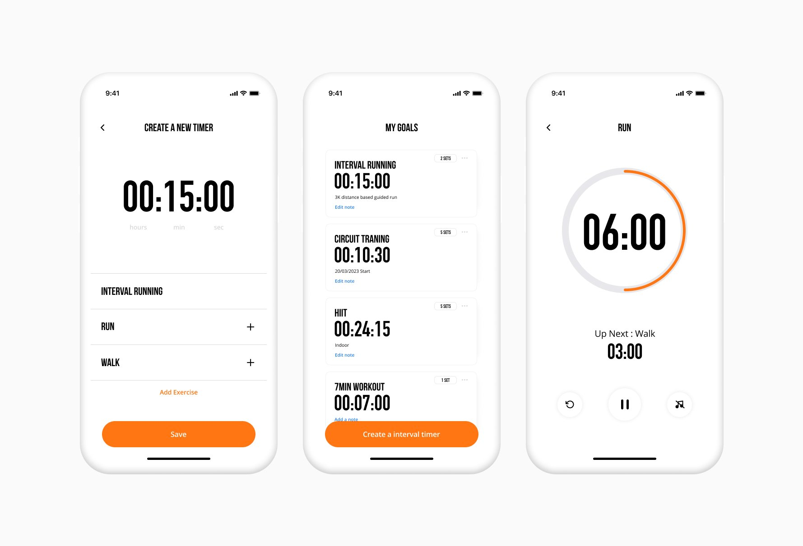
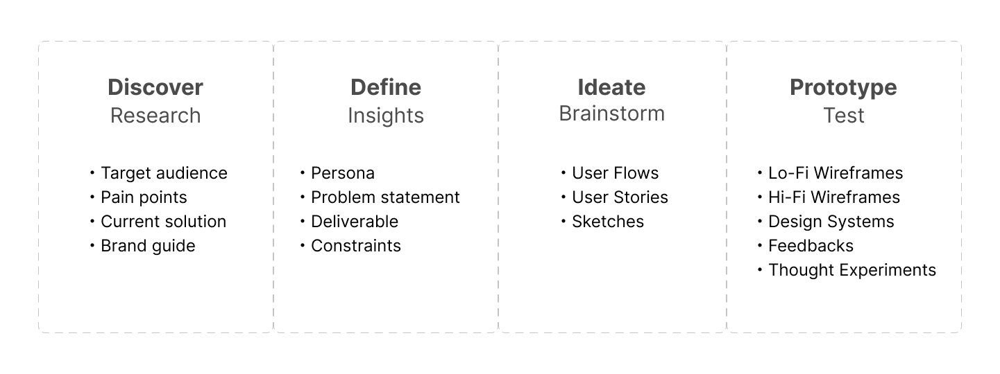
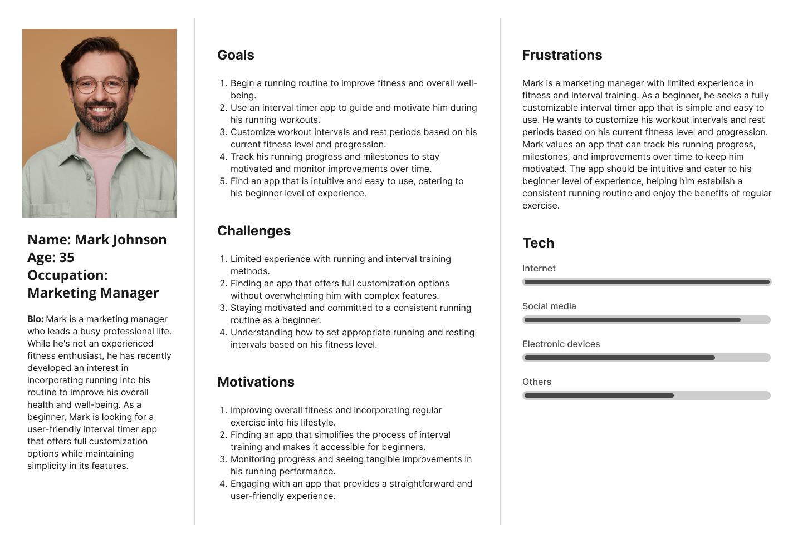
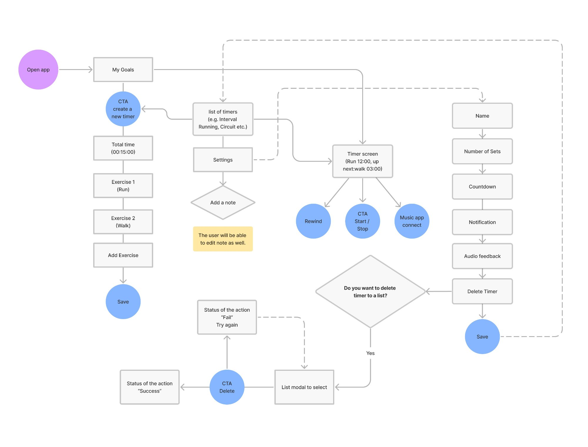
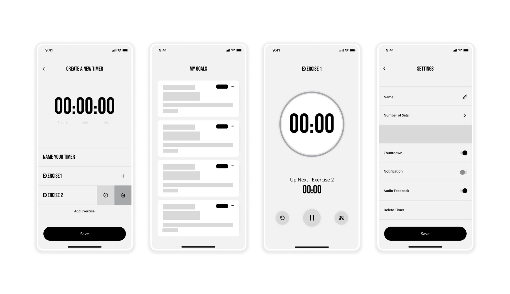
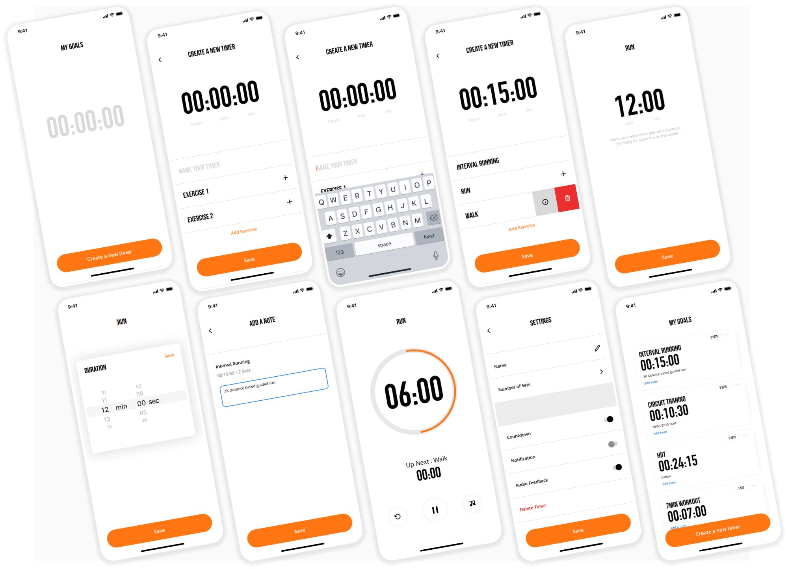

MyGoals is a mobile application designed to provide users with a flexible and personalised solution for interval training. The app allows users to create and customise their own interval timers, tailoring them to their specific workout routines and fitness goals.
By providing a user-friendly interface and robust customisation options, the app empowers individuals to take control of their training and maximise their workout effectiveness.
Most interval timer apps were built for one type of person: a serious athlete with a fixed training program. Anyone with a more flexible or evolving routine — injury recovery, mixed training, custom intervals — was stuck trying to shoehorn their needs into a timer that wasn't designed for them.
The brief came from a real gap: no app on the market let you fully own your training structure. The goal wasn't to build another timer. It was to build the one people would actually keep using.
Using the Design Thinking approach — Discover, Define, Ideate, and Prototype — the project followed a structured research-to-delivery workflow.

I ran a card sorting study with 15 participants — people who already used interval training in their routines — to understand how they grouped features and what they expected the app to do. Three clear patterns emerged, each of which drove a specific design decision:


Translated sketches into graphics, reconsidering interaction elements at each stage. The high-fidelity prototype featured a consistent design system — branding, typography, colour scheme — with intuitive icons guiding users through customisation.


The prototype was validated against the 4 design goals with target users. The biggest piece of feedback was around the onboarding flow — participants made it clear they wanted to create a timer on their first session, not walk through a guided tour first. The flow was simplified and the time-to-first-timer dropped significantly.
The design system ended up being the project's most valuable deliverable. It made the high-fidelity phase move fast and gave the engineering team a single reference for every component state. What looked like upfront overhead turned out to be the thing that saved the most time.
The lesson I took from this project is to front-load the user flow work. I spent too long designing an onboarding sequence that users didn't want — they just wanted to start a timer, not take a tour. Mapping the core flows before opening Figma would have saved a full week of redesign.
Build the design system before high-fidelity, not during it. Once the tokens and components were locked in, every screen came together quickly and consistently. That discipline is now just how I start every project.